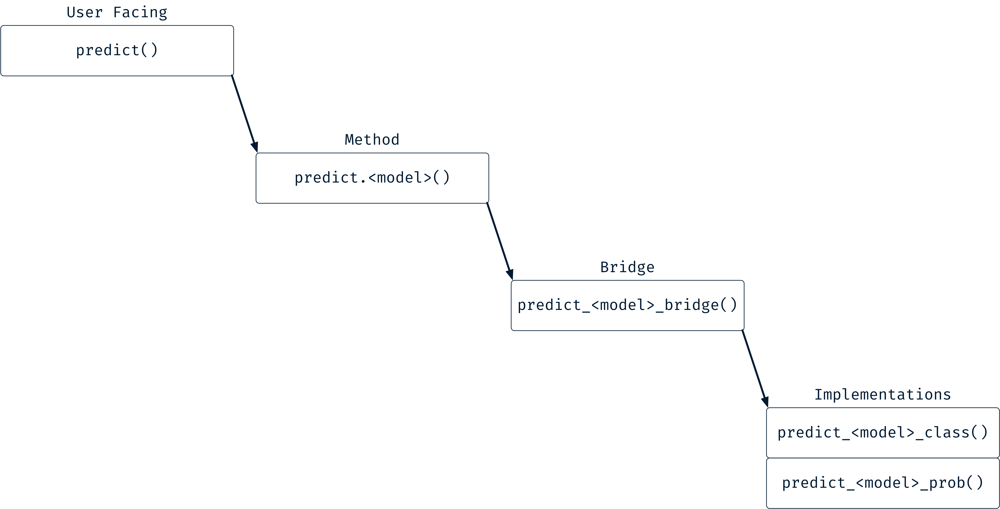

Introduction
The goal of this vignette is to teach you how to use mold() and forge() in a modeling package. This is the intended use of these functions, even though they can also be called interactively. Creating a new modeling package has two main stages: creating the model fitting function, and implementing a predict method. The stages break down like this:
-
Stage 1 - Model Fitting
Create a model constructor.
Create a fitting implementation function.
Create a common bridge to go between high level user facing methods and the lower level constructor and implementation function.
Create a user facing function with methods for data frame, matrix, formula, and recipe inputs.
I imagine that this comes together as a few internal pieces that power the user facing methods for your model.

-
Stage 2 - Model Prediction
Create one or more prediction implementation functions, varying by the
"type"of prediction to make.Create a common bridge between a high level predict method and the lower level prediction implementation functions.
Create a user facing predict method.
In this case, there are 2 user facing methods. Many models have multiple internal implementation functions that you’ll switch between, depending on the "type".

The end result is a single high level modeling function that has methods for multiple different “interfaces”, and a corresponding predict method to make predictions using one of these models along with new data (by “interfaces”, I just mean the different types of inputs, so: data frame, matrix, formula and recipe).
There are obviously other things that you might want your modeling package to do. For instance, you might implement a plot() or summary() method. But the two stages described here are necessary for almost every model, and they involve the inputs and outputs that hardhat helps the most with.
What’s Our Model?
We will use the underlying lm() infrastructure, lm.fit(), to create our model. Linear regression should be recognizable to many, so we can focus on understanding how mold() and forge() fit in the bigger picture, rather than trying to understand how the model works.
lm.fit() takes x and y directly, rather than using the formula method. It will serve as the core part of our modeling implementation function. More generally, it is easiest if the core implementation function of your algorithm takes x and y in this manner, since that is how mold() will standardize the inputs.
We will call the model simple_lm(). It won’t have all the features of normal linear regression (weights, offsets, etc), but will serve as a nice dummy model to show off features you get with hardhat.
Model Fitting
Model Constructor
The first thing we need is a modeling constructor. Constructors are very simple functions that creates new objects of our model class. In the arguments to the constructor you supply all of the individual pieces, and it wraps them up into a model object. The hardhat function new_model() can help with creating that.
A model constructor should:
Have the name
new_<model_class>().Take the required model elements as named arguments, including a required
blueprint.Validate the types of the new elements.
Pass the named elements on to
new_model()along with setting the class to"<model_class>".
If you want to learn more about the details of constructors and creating S3 classes, take a look at the S3 section in Advanced R.
new_simple_lm <- function(coefs, coef_names, blueprint) {
if (!is.numeric(coefs)) {
stop("`coefs` should be a numeric vector.", call. = FALSE)
}
if (!is.character(coef_names)) {
stop("`coef_names` should be a character vector.", call. = FALSE)
}
if (length(coefs) != length(coef_names)) {
stop("`coefs` and `coef_names` must have the same length.")
}
new_model(
coefs = coefs,
coef_names = coef_names,
blueprint = blueprint,
class = "simple_lm"
)
}A "simple_lm" object has just enough information to make numeric predictions on new data, but you can store other things here as well to enable your model object to work with extra post-fitting functionality.
We can test this by manually generating a model object. Along with the custom class we provided, this object also has a "hardhat_model" class. There is a very simple print method for objects of this type. Specifically, it prints the name of the class at the top, and only prints out the custom elements (i.e. not the blueprint).
manual_model <- new_simple_lm(1, "my_coef", default_xy_blueprint())
manual_model
#> <simple_lm>
#> $coefs
#> [1] 1
#>
#> $coef_names
#> [1] "my_coef"
names(manual_model)
#> [1] "coefs" "coef_names" "blueprint"
manual_model$blueprint
#> XY blueprint:
#>
#> # Predictors: 0
#> # Outcomes: 0
#> Intercept: FALSE
#> Novel Levels: FALSEModel Fitting Implementation
The implementation function is where the hard work is done. I generally recommend naming it <model_class>_impl(). It should accept predictors and outcomes in whatever form is required for the algorithm, run the algorithm, and return a named list of the new elements you added to the model constructor. You might also have arguments for extra options that can be used to tweak the internal algorithm.
simple_lm_impl <- function(predictors, outcomes) {
lm_fit <- lm.fit(predictors, outcomes)
coefs <- lm_fit$coefficients
coef_names <- names(coefs)
coefs <- unname(coefs)
list(
coefs = coefs,
coef_names = coef_names
)
}This simple linear regression implementation just calls lm.fit() with x = predictors and y = outcomes. lm.fit() expects a matrix of predictors and a vector of outcomes (at least for univariate regression). In a moment we will discuss how to create those.
Model Fitting Bridge
Now that we have our constructor and our implementation function, we can create a common function that will be used in all of our top level methods (for data frames, matrices, formulas, and recipes). It will call the implementation function, and then use that information along with the blueprint to create a new instance of our model. It should have an argument for the output from a call to mold(), here I’ve called that processed. In that object will be (at a minimum) the predictors, outcomes, and blueprint. You might also have arguments for additional options to pass on to the implementation function.
The bridge function should take the standardized predictors and outcomes and convert them to the lower level types that the implementation function requires. The predictors and outcomes that are returned from mold() will always be data frames, so in this case we can convert them to matrices and vectors directly for use in the lower level function.
This is also a good place to use some of hardhat’s validation functions. In this case, we always expect the outcome to have a single column since this is a univariate model, so we can use validate_outcomes_is_univariate() to enforce that.
simple_lm_bridge <- function(processed) {
validate_outcomes_are_univariate(processed$outcomes)
predictors <- as.matrix(processed$predictors)
outcomes <- processed$outcomes[[1]]
fit <- simple_lm_impl(predictors, outcomes)
new_simple_lm(
coefs = fit$coefs,
coef_names = fit$coef_names,
blueprint = processed$blueprint
)
}At this point, we can simulate user input and pass it on to our bridge to run a model.
# Simulate formula interface
processed_1 <- mold(Sepal.Width ~ Sepal.Length + Species, iris)
# Simulate xy interface
processed_2 <- mold(x = iris["Sepal.Length"], y = iris$Sepal.Width)
simple_lm_bridge(processed_1)
#> <simple_lm>
#> $coefs
#> [1] 0.3498801 1.6765001 0.6931116 0.6689898
#>
#> $coef_names
#> [1] "Sepal.Length" "Speciessetosa" "Speciesversicolor"
#> [4] "Speciesvirginica"
simple_lm_bridge(processed_2)
#> <simple_lm>
#> $coefs
#> [1] 0.5117739
#>
#> $coef_names
#> [1] "Sepal.Length"Multiple outcomes are an error:
User Facing Fitting Function
With all of the pieces in place, we have everything we need to create our high level modeling interface. This should be a generic function, generally with methods for data frames, matrices, formulas, and recipes. Each method should call mold() with the method specific inputs to run the preprocessing, and then pass off to the bridge function to run the actual model. It is also good practice to provide a default method with a nice error message for unknown types.
# Generic
simple_lm <- function(x, ...) {
UseMethod("simple_lm")
}
# Default
simple_lm.default <- function(x, ...) {
stop(
"`simple_lm()` is not defined for a '", class(x)[1], "'.",
call. = FALSE
)
}
# XY method - data frame
simple_lm.data.frame <- function(x, y, ...) {
processed <- mold(x, y)
simple_lm_bridge(processed)
}
# XY method - matrix
simple_lm.matrix <- function(x, y, ...) {
processed <- mold(x, y)
simple_lm_bridge(processed)
}
# Formula method
simple_lm.formula <- function(formula, data, ...) {
processed <- mold(formula, data)
simple_lm_bridge(processed)
}
# Recipe method
simple_lm.recipe <- function(x, data, ...) {
processed <- mold(x, data)
simple_lm_bridge(processed)
}Let’s give it a try:
predictors <- iris[c("Sepal.Width", "Petal.Width")]
outcomes_vec <- iris$Sepal.Length
outcomes_df <- iris["Sepal.Length"]
# Vector outcome
simple_lm(predictors, outcomes_vec)
#> <simple_lm>
#> $coefs
#> [1] 1.392293 1.282020
#>
#> $coef_names
#> [1] "Sepal.Width" "Petal.Width"
# 1 column data frame outcome
simple_lm(predictors, outcomes_df)
#> <simple_lm>
#> $coefs
#> [1] 1.392293 1.282020
#>
#> $coef_names
#> [1] "Sepal.Width" "Petal.Width"
# Formula interface
simple_lm(Sepal.Length ~ Sepal.Width + Petal.Width, iris)
#> <simple_lm>
#> $coefs
#> [1] 1.392293 1.282020
#>
#> $coef_names
#> [1] "Sepal.Width" "Petal.Width"We can use preprocessing as well, and it is handled by mold().
library(recipes)
# - Log a predictor
# - Generate dummy variables for factors
simple_lm(Sepal.Length ~ log(Sepal.Width) + Species, iris)
#> <simple_lm>
#> $coefs
#> [1] 2.406662 2.055780 3.499779 3.978746
#>
#> $coef_names
#> [1] "log(Sepal.Width)" "Speciessetosa" "Speciesversicolor"
#> [4] "Speciesvirginica"
# Same, but with a recipe
rec <- recipe(Sepal.Length ~ Sepal.Width + Species, iris) %>%
step_log(Sepal.Width) %>%
step_dummy(Species, one_hot = TRUE)
simple_lm(rec, iris)
#> <simple_lm>
#> $coefs
#> [1] 2.406662 2.055780 3.499779 3.978746
#>
#> $coef_names
#> [1] "Sepal.Width" "Species_setosa" "Species_versicolor"
#> [4] "Species_virginica"Adding an Intercept Option
You might have noticed that our linear regression isn’t adding an intercept. Generally, with linear regression models we will want a default intercept added on. To accomplish this, we can add an intercept argument to our user facing function, and then use that to tweak the blueprint that would otherwise be created for you automatically.
simple_lm <- function(x, ...) {
UseMethod("simple_lm")
}
simple_lm.data.frame <- function(x, y, intercept = TRUE, ...) {
blueprint <- default_xy_blueprint(intercept = intercept)
processed <- mold(x, y, blueprint = blueprint)
simple_lm_bridge(processed)
}
simple_lm.matrix <- function(x, y, intercept = TRUE,...) {
blueprint <- default_xy_blueprint(intercept = intercept)
processed <- mold(x, y, blueprint = blueprint)
simple_lm_bridge(processed)
}
simple_lm.formula <- function(formula, data, intercept = TRUE, ...) {
blueprint <- default_formula_blueprint(intercept = intercept)
processed <- mold(formula, data, blueprint = blueprint)
simple_lm_bridge(processed)
}
simple_lm.recipe <- function(x, data, intercept = TRUE, ...) {
blueprint <- default_recipe_blueprint(intercept = intercept)
processed <- mold(x, data, blueprint = blueprint)
simple_lm_bridge(processed)
}# By default an intercept is included
simple_lm(predictors, outcomes_df)
#> <simple_lm>
#> $coefs
#> [1] 3.4573334 0.3990708 0.9721296
#>
#> $coef_names
#> [1] "(Intercept)" "Sepal.Width" "Petal.Width"
# But the user can turn this off
simple_lm(Sepal.Length ~ log(Sepal.Width) + Species, iris, intercept = FALSE)
#> <simple_lm>
#> $coefs
#> [1] 2.406662 2.055780 3.499779 3.978746
#>
#> $coef_names
#> [1] "log(Sepal.Width)" "Speciessetosa" "Speciesversicolor"
#> [4] "Speciesvirginica"Note that even the formula method respects this intercept argument. To recap, by default mold() will not automatically add an intercept for any method, including the formula method.
Model Prediction
Prediction Implementation
On the prediction side, we need implementation functions like for fitting our model. These vary based on the "type" argument to predict(). The "type" might be "numeric" for numeric predictions as we will use here, or it could be "class" for hard class predictions, "prob" for class probabilities, and more. A set of recommended names for "type" can be found in the Model Predictions section of the implementation principles.
For our model, we will focus on only returning numeric predictions. I generally like to name these prediction implementation functions predict_<model_class>_<type>(). The arguments for the implementation functions should include the model object and the predictors in the form that your prediction algorithm expects (here, a matrix).
Also used here is another hardhat function for standardizing prediction output, spruce_numeric(). This function tidies up the numeric response output, and automatically standardizes it to match the recommendations in the principles guide. The output is always a tibble, and for the "numeric" type it has 1 column, .pred.
predict_simple_lm_numeric <- function(object, predictors) {
coefs <- object$coefs
pred <- as.vector(predictors %*% coefs)
out <- spruce_numeric(pred)
out
}To test it, we will have to run a model and call forge() on the output manually. The higher level user facing function will do this automatically.
model <- simple_lm(Sepal.Width ~ Sepal.Length + Species, iris)
predictors <- forge(iris, model$blueprint)$predictors
predictors <- as.matrix(predictors)
predict_simple_lm_numeric(model, predictors)
#> # A tibble: 150 x 1
#> .pred
#> <dbl>
#> 1 3.46
#> 2 3.39
#> 3 3.32
#> 4 3.29
#> 5 3.43
#> 6 3.57
#> 7 3.29
#> 8 3.43
#> 9 3.22
#> 10 3.39
#> # … with 140 more rowsPrediction Bridge
A prediction bridge converts the standardized predictors into the lower level type that the prediction implementation functions expect. predictors here is always a data frame, and is part of the return value of a call to forge(). Since the prediction implementation function takes a matrix, we convert it to that here.
Additionally, it should switch() on the type argument to decide which of the prediction implementation functions to call. Here, when type == "numeric", predict_simple_lm_numeric() is called.
I also like using rlang::arg_match() to validate that type is one of the accepted prediction types. This has an advantage over match.arg() in that partial matches are not allowed, and the error messages are a bit nicer.
predict_simple_lm_bridge <- function(type, object, predictors) {
type <- rlang::arg_match(type, "numeric")
predictors <- as.matrix(predictors)
switch(
type,
numeric = predict_simple_lm_numeric(object, predictors)
)
}Let’s test:
model <- simple_lm(Sepal.Width ~ Sepal.Length + Species, iris)
# Pass in the data frame
predictors <- forge(iris, model$blueprint)$predictors
predict_simple_lm_bridge("numeric", model, predictors)
#> # A tibble: 150 x 1
#> .pred
#> <dbl>
#> 1 3.46
#> 2 3.39
#> 3 3.32
#> 4 3.29
#> 5 3.43
#> 6 3.57
#> 7 3.29
#> 8 3.43
#> 9 3.22
#> 10 3.39
#> # … with 140 more rows
# Partial matches are an error
predict_simple_lm_bridge("numer", model, predictors)
#> Error: `type` must be one of "numeric"
#> Did you mean "numeric"?User Facing Prediction Function
Finally, we can create an S3 method for the generic predict() function. To match the modeling principles, it should use new_data to accept a matrix or data frame of new predictors.
The first thing that the predict() method should do is call forge() with the new_data and the blueprint that we attached to our simple_lm model at fit time. This performs the required preprocessing on the new data, and checks that the type of the data frame supplied to new_data matches the type of data frame supplied at fit time. This is one of the most valuable features of forge(), as it adds a large amount of robustness to your predict()ion function. You will see some examples of this at the end of the vignette.
After calling forge(), it should pass off to the bridge function to call the correct prediction function based on the type.
Finally, it is good practice to call the hardhat function, validate_prediction_size(), with the return value and the original new_data to ensure that the number of rows in the output are the same as the number of rows of the input. If a prediction cannot be made for a row of new_data, an NA value should be placed there instead. Mainly, this validation function is a check on the model developer to ensure that you always return output with a sane length.
Final Testing
Finally, we can test out our top level modeling function along with its corresponding predict() method.
model <- simple_lm(Sepal.Width ~ log(Sepal.Length) + Species, iris)
predict(model, iris)
#> # A tibble: 150 x 1
#> .pred
#> <dbl>
#> 1 3.47
#> 2 3.39
#> 3 3.29
#> 4 3.25
#> 5 3.43
#> 6 3.60
#> 7 3.25
#> 8 3.43
#> 9 3.15
#> 10 3.39
#> # … with 140 more rowsBy using forge(), you automatically get powerful type checking to ensure that the new_data is in a form that you expect.
# `new_data` isn't a data frame
predict(model, iris$Species)
#> Error: The class of `new_data`, 'factor', is not recognized.
# Missing a required column
predict(model, subset(iris, select = -Sepal.Length))
#> Error: The following required columns are missing: 'Sepal.Length'.
# In this case, 'Species' is a character,
# but can be losslessy converted to a factor.
# That happens for you automatically and silently.
iris_chr_species <- transform(iris, Species = as.character(Species))
predict(model, iris_chr_species)
#> # A tibble: 150 x 1
#> .pred
#> <dbl>
#> 1 3.47
#> 2 3.39
#> 3 3.29
#> 4 3.25
#> 5 3.43
#> 6 3.60
#> 7 3.25
#> 8 3.43
#> 9 3.15
#> 10 3.39
#> # … with 140 more rows
# Slightly different from above. Here, 'Species' is a character,
# AND has an extra unexpected factor level. It is
# removed with a warning, but you still get a factor
# with the correct levels
iris_chr_bad_species <- iris_chr_species
iris_chr_bad_species$Species[1] <- "new_level"
predict(model, iris_chr_bad_species)
#> Warning: Novel levels found in column 'Species': 'new_level'. The levels have
#> been removed, and values have been coerced to 'NA'.
#> # A tibble: 150 x 1
#> .pred
#> <dbl>
#> 1 NA
#> 2 3.39
#> 3 3.29
#> 4 3.25
#> 5 3.43
#> 6 3.60
#> 7 3.25
#> 8 3.43
#> 9 3.15
#> 10 3.39
#> # … with 140 more rows
# This case throws an error.
# Here, 'Species' is a double and
# when it should have been a factor.
# You can't cast a double to a factor!
iris_dbl_species <- transform(iris, Species = 1)
predict(model, iris_dbl_species)
#> Error: Can't cast `x$Species` <double> to `to$Species` <factor<12d60>>.